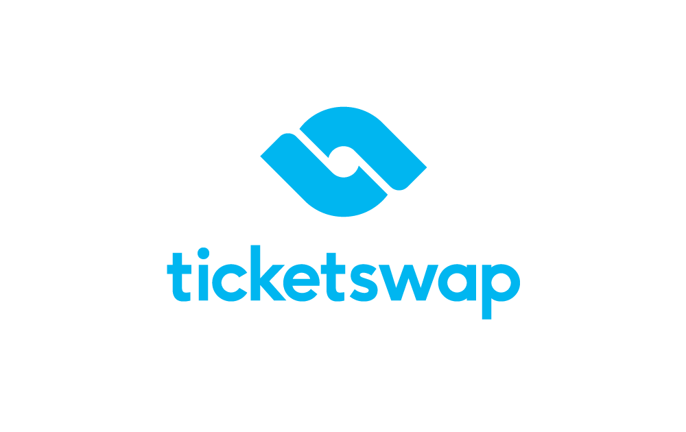

Ticketswap ontbrak functies voor minder valide.
Het grote platform is bij vele al erg bekent voor het kopen en verkopen van online tickets. De app werkt fantastisch, de website een stuk minder. Daar heb ik verder aan gewerkt.
Het grote platform is bij vele al erg bekent voor het kopen en verkopen van online tickets. De app werkt fantastisch, de website een stuk minder. Daar heb ik verder aan gewerkt.
Ik heb Ticketswap door een WCAG-test gehaald. De website faalde vooral bij gebruik van een screenreader. Die punten heb ik aangepakt.
Klein te beginnen, hoe belangrijk het is om een website inclusief te maken en verdere skills in HTML/CSS.
Ik heb Ticketswap 1:1 nagemaakt en onderhuids veel verbeterd. Afbeeldingen beschikken nu over alt-teksten, headings kloppen en de website is goed te doorlopen met een screenreader.
